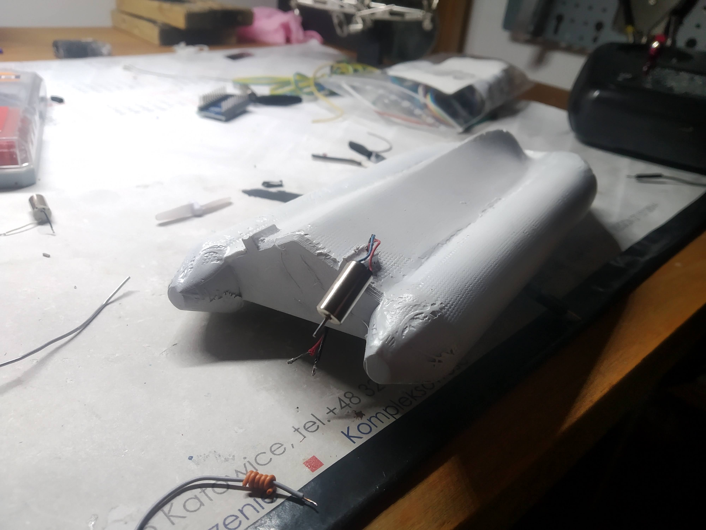
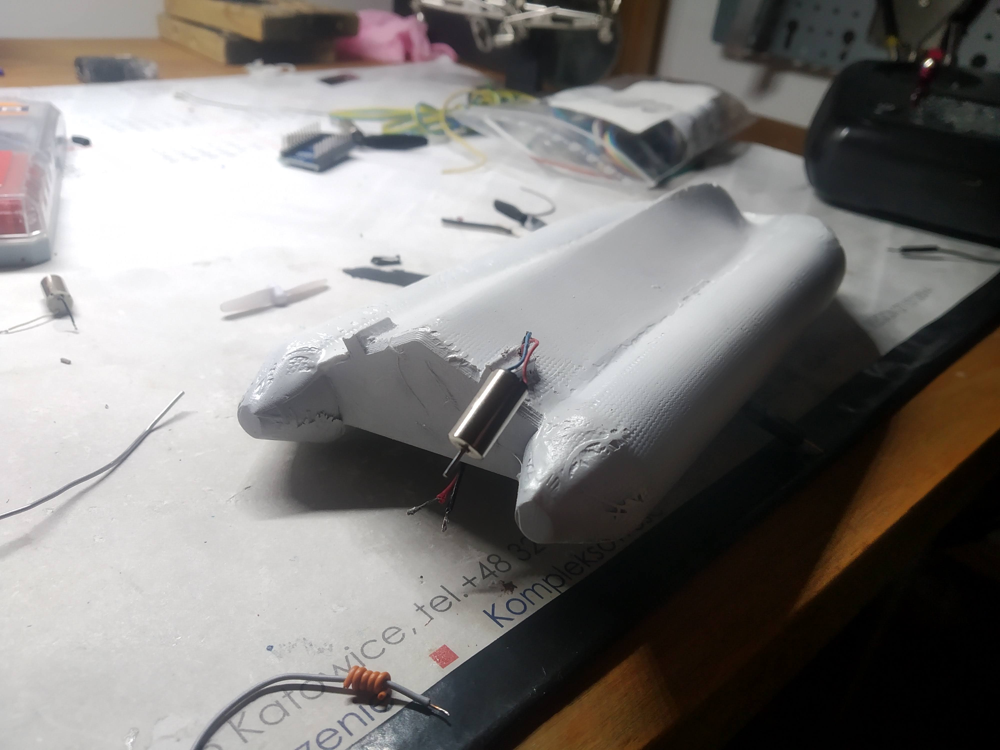

ZODIAK
“Zodiak” jest małym, zdalnie sterowanym modelem pontonu motorowego, zbudowanym w ciągu ferii świątecznych pod koniec 2022 roku. Projekt ten powstał, ponieważ od dawna chciałem zbudować zdalnie sterowaną łódkę, a jako że nigdy łódek nie budowałem, postanowiłem zacząć od czegoś małego i prostego. Podczas składania „Zodiaka” głównie chciałem nauczyć się kłaść włókno szklane (czego wcześniej nie robiłem), ale też poznać wszystkie rzeczy, jakie mogą nie wyjść, gdy ktoś bez doświadczenia projektuje łódkę. Pomysł był dość spontaniczny, więc ostatecznie całość złożyłem z komponentów, które już miałem.
Konstrukcja kadłuba
Kadłub zaprojektowałem czerpiąc inspirację z łódek motorowych typu Zodiac, których płaski i szeroki kształt uznałem za bardzo bezpieczny i stabilny dla pojazdu, który nie musi być szybki (celem było żeby po prostu pływał). Następnie został on wydrukowany z PLA (brak wypełnienia, cienkie ścianki), oraz zalaminowany włóknem szklanym, które akurat miałem pod ręką (nie wiem jakiej było grubości). Całość została wyszlifowana i pomalowana na biało w nawiązaniu do oryginalnych Zodiaków.
Dostęp do elektroniki zapewnia dokręcana śrubami klapka. Jej połączenie z kadłubem zostało uszczelnione silikonem.
Silniki umieszczone są na kolumienkach, żeby lepiej zasysały wodę spod łódki. Dodatkowo nad wirnikami domontowałem osłony, które zapobiegają wciąganiu powietrza po rufie. Bez tego silniki chodziły praktycznie w powietrzu i łódka prawie nie pływała.
 

Elektronika
Bateria – Li-Po 1S (3.7V), ~560mAh. Malutki akumulator, jednak jeszcze nie udało mi się go rozładować. Do tego rozmiaru silników jest idealna.
Odbiornik – FlySky RX2A Pro. Wersja mini odbiornika do aparatur FlySky. W moim przypadku przekazuje sygnał radiowy po IBus do Arduino.
Arduino – Arduino Pro Mini 3.3V. Służy tylko jako konwerter sygnału z IBus na sygnały PWM (Pulse Width Modulation) dla sterownika silników. Przy okazji miksuje kanały. Bez problemu toleruje 4V z baterii, więc nie trzeba dodatkowej przetwornicy.
Sterownik silników – jakiś Chiński sterownik na mostku H.
Silniki – szczotkowe 6mm średnicy, wymontowane z micro drona. Są trochę za małe do tej aplikacji, silnikach. Łódka pływa całkiem dobrze, to się liczy. W teorii nie powinno się używać takich silników w zanużeniu (mogę zardzewieć w środku), ale nie planuję pływać tą łódką bardzo często, więc powinny wytrzymać wystarczajęco długo. Uszczelniłem je jednynie od tyłu silikonem, żeby spróbować ograniczyć ich zalewanie.